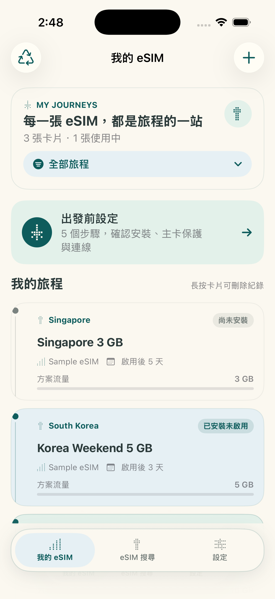
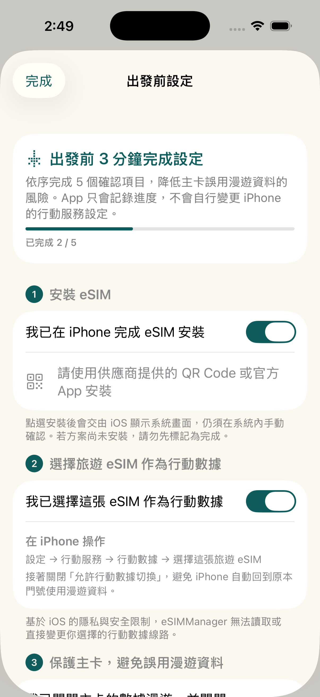
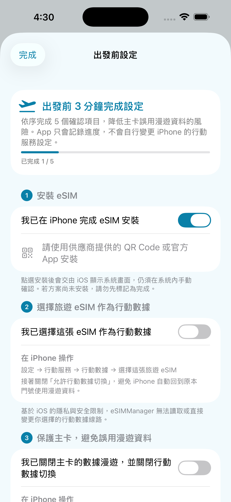
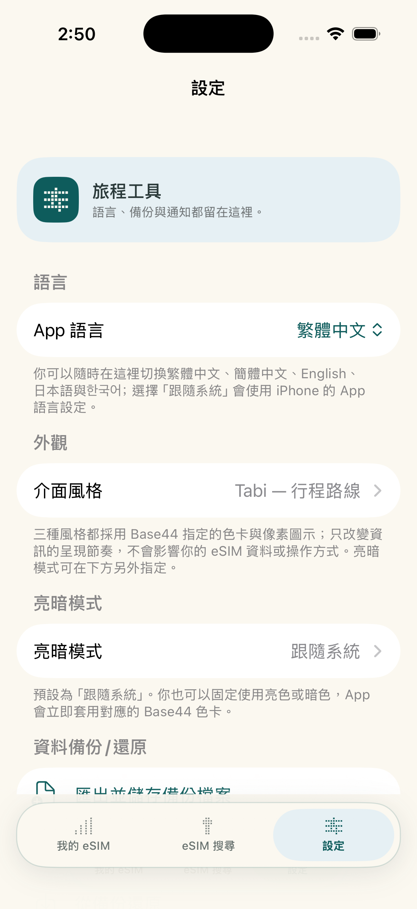
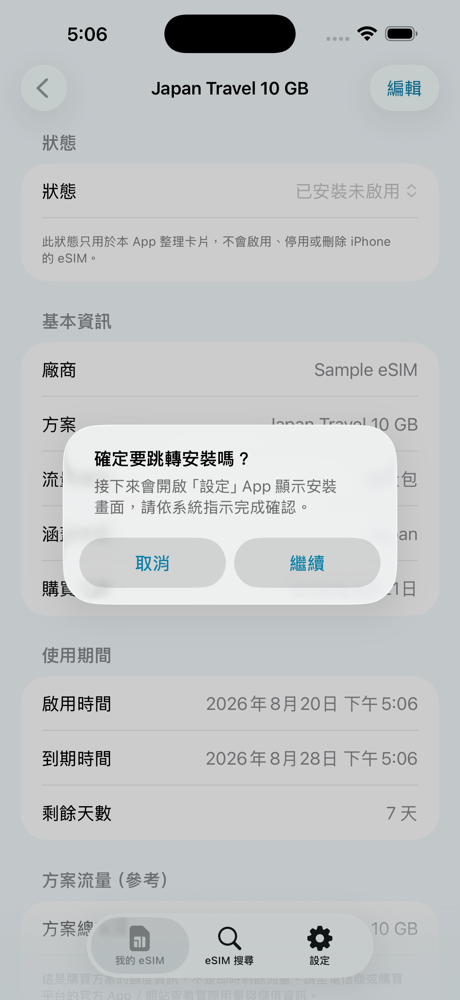
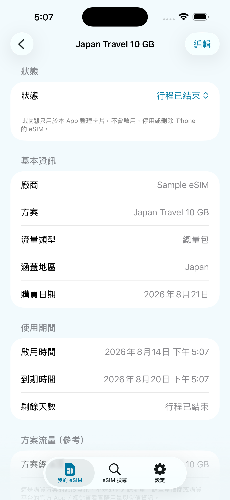
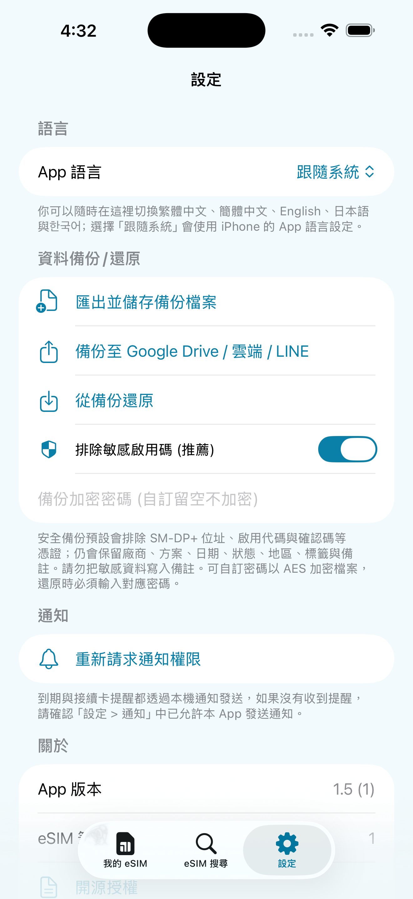

단일 eSIM 브랜드에 연결되어 있지 않습니다. 예산과 여정에 맞는 요금제를 비교하고 선택한 다음 eSIMManager를 사용하여 여러 카드, 활성화 정보 및 만료일을 한 곳에서 정리할 수 있습니다. 출발 전에 처음 3번의 확인을 완료하고, 도착 후 2번의 활성화 및 연결 확인을 완료합니다. 실제 설정, 설치 및 사용은 여전히 iOS 및 공급업체의 공식 정보를 기반으로 합니다.

분산된 여행 eSIM 정보를 안전한 출발 프로세스로 구성하는 데 도움이 되는 단일 공급업체나 구독 임계값이 없습니다.
여행 플랫폼, 이동통신사 또는 기타 신뢰할 수 있는 매장에서 eSIM을 받든, 사용 가능한 활성화 정보를 앱으로 구성할 수 있습니다. 제안 가격, 재고 및 서비스 콘텐츠는 선택한 공급업체 페이지를 기반으로 합니다.
QR 코드, LPA 활성화 정보 (해당하는 경우), 만료일, 메모를 한 곳에 보관하세요. 데이터는 장치에 로컬로 저장됩니다. 필요에 따라 여정을 백업, 공유 또는 종료로 표시할 수 있습니다.
앱 내 구매 또는 최대 수의 카드가 없으며, 설치 가이드, 출발 전 확인, 만료 카운트다운 및 기기 트래픽 추정치가 있습니다. iPhone의 모바일 데이터 및 로밍 설정은 여전히 시스템에서 확인해야 합니다.
정식 출시된 앱 화면으로 주요 사용 흐름과 이용 제한 사항을 안내합니다.
여행 eSIM을 만든 후 홈페이지는 사용자가 중요한 항목을 순서대로 확인할 수 있도록 출발 전 포털을 제공합니다.

일반적인 LPA QR 코드, 이미지, PDF 및 전체 LPA 문자열의 가져오기를 지원합니다. 인식은 인증서 형식, 문서 콘텐츠 및 이미지 품질에 따라 달라집니다.

정보가 완료되고 장치 지원이 활성화되면 Apple의 시스템 eSIM 설치 프로세스를 열 수 있습니다. 시스템 화면에서 사용자가 여전히 확인해야 하며 설치 결과는 iOS 및 공급업체를 기반으로 합니다.

출국 전에 기본 카드의 '데이터 로밍' 및 '모바일 데이터 전환 허용' 이 꺼져 있는지 확인하여 높은 로밍 요금의 위험을 줄이세요.
여정 중에 앱 인터페이스의 언어를 직접 변경하거나 iPhone 시스템의 언어를 따르도록 선택할 수 있습니다.

JSON 백업을 내보내고 새 장치에서 카드 레코드를 가져올 수 있습니다. 암호를 설정하면 백업이 AES-GCM으로 암호화됩니다.

여행 eSIM을 구매, 설치, 활성화, 투여 및 구성하는 6단계가 있습니다. 왼쪽과 오른쪽으로 살짝 밀어 각 단계를 확인할 수 있습니다. 4단계와 5단계에서 캐릭터의 손에 있는 휴대폰을 누르면 실제 앱 작동 화면이 표시됩니다.


중국어 번체, 중국어 간체, 영어, 일본어, 일본어로 전환하거나 앱에서 iPhone 시스템 언어를 따르도록 선택할 수 있습니다.

QR 코드 또는 LPA 활성화 정보를 얻은 다음 eSIMManager를 사용하여 설정을 구성하고 안내하십시오. 다음은 Klook, KKday, Airalo, Trip.com 및 기타 플랫폼에 대한 권장 매장 및 출입구입니다. 실제 요금제, 가격, 재고, eSIM 지원 여부는 각 플랫폼 페이지의 적용을 받습니다.
eSIM 및 여행 카드 요금제를 살펴보고, 주문하기 전에 목적지, 사용일, 활성화 방법, 아이템 설명을 확인하세요.
위의 내용은 외부 매장 및 플랫폼에서 제공하는 공식 광고 또는 추천 링크입니다. 일부 링크에는 추천/수익 공유 매개 변수가 포함될 수 있습니다. 실제 가격, 프로모션 및 서비스 콘텐츠에는 각 플랫폼의 페이지가 적용됩니다. 클릭하면 eSIMManager 웹사이트에서 나가게 되며 거래, 상품 및 서비스는 각 상점 또는 플랫폼에서 약관에 따라 제공됩니다.
사용자의 알 권리를 보호하고 시스템이 실제로 작동하는 방식에 맞추기 위해 이 앱의 기술적 근거와 제한 사항을 설명하고자 합니다.
이 앱의 모바일 트래픽 통계는 다윈 BSD를 통해 수집됩니다. getifaddrs 인터페이스, 로컬 읽기 pdp_ip* 모바일 데이터 채널의 누적 트랜시버 바이트 수입니다. 이것은장치 측 네트워크 트래픽 추정 참조: 실제로 사용 중인 eSIM을 식별할 수 없으며, 다른 SIM의 트래픽, 인터페이스 재설정, 데이터 포기 제안 및 청구 주기가 모두 불일치를 일으킬 수 있습니다. 예상 금액은 앱이 이동통신사의 실시간 청구서가 아닌 전망으로 돌아올 때 업데이트됩니다. 실제 잔액은 이동통신사의 공식 시스템에 따라 달라질 수 있습니다.
Apple의 iOS 시스템 보안으로 인해 타사 앱은 백그라운드에서 직접 eSIM을 자동으로 설치할 수 없으며 사용자의 모바일 데이터 라인을 변경할 수도 없습니다. "설치 트리거" 를 클릭하면 Apple의 시스템 eSIM 설치 프로세스만 열려고 시도합니다. 설치를 완료하는 프로세스와 기능은 iOS 버전, 장치, 네트워크, 자격 증명 및 공급업체에 따라 다릅니다. 사용자는 여전히 시스템 화면에서 수동으로 확인해야 합니다.
eSIMManager는 순수하고 고품질의 현지 관리 도구를 제공하는 데 중점을 둡니다. 환영합니다통신사, eSIM 퍼블리셔, 여행 플랫폼 및 파트너적절한 잠재 고객, 브랜드 노출 및 콘텐츠 협업을 협상합니다.
표준 LPA QR 코드 호환성 정보, 브랜드 노출 및 독점 오퍼에 대해 협력하는 방법을 협상합니다.
여행 플랫폼 리드, 공동 브랜드 캠페인, 다양한 비즈니스 프로젝트 제안.
아래 양식을 작성하거나 공식 우편함으로 직접 보내주시면 최대한 빨리 연락드리겠습니다.
LPA:1$ 시작). 이미지 품질, 공급업체 형식 또는 보호된 PDF는 식별에 영향을 미칠 수 있습니다. 대신 수동 입력을 사용하여 공급업체가 제공한 전체 LPA 문자열을 붙여넣거나 공급업체에 표준 인증서를 요청하십시오.
오늘 eSIMManager를 무료로 다운로드하고 모든 여행 eSIM을 명확하고 안전한 출발 흐름으로 구성하십시오.